The fifteen specimens
what is in the cubeThe x axis is the phase axis. A straight line along x reads the
specimen's natural waveform at whatever (y, z) it sits at, so an ordinary wavetable
is a special case: a straight line, moved sideways. The other two axes are the timbre axes and
each specimen says what they mean.
| Specimen | A straight line reads | y | z |
|---|---|---|---|
| SINUS | a sine | amplitude | a touch of second harmonic |
| SPINE | a harmonic stack | brightness | parity: saw to square |
| PULSE | a pulse | width, 5–95 % | edge softness |
| MARROW | a ramp | curvature | folds toward a triangle |
| NERVE | a phase-modulated sine | index | modulator ratio |
| RETINA | two decaying formants | first formant | second formant |
| THORAX | a chest CT | ribs, sternum, spine, two lungs with their vessels, the heart and aorta | |
| SKULL | the skull alone | vault, orbits, sinuses, cheekbones, jaw and teeth — no soft tissue | |
| CORTEX | a head CT | the same skull with brain, ventricles, eyes and scalp | |
| SUTURE | a random staircase | steps per cycle, 4–32 | walks eight patterns |
| ENAMEL | a comb of spikes | their width | how many per cycle, 1–8 |
| TENDON | four partials | harmonic to a bell's ratios | brightness |
| VERTEBRA | three lumbar levels | bodies, discs, the canal and its roots, processes, the muscles around | |
| FEMUR | a thigh | the femoral shaft flaring into its ends, marrow, muscle compartments, vessels | |
| JAW | the mandible | both rows of teeth with enamel, dentine and pulp; the tongue and the palate | |
Musically normal by construction. SPINE at a given (y, z) is exactly a
harmonic series with a known rolloff and a known parity; PULSE at a given y is
exactly a pulse of a known width. The bench checks both against their formulas — the duty cycle
lands within 0.001 of what the formula says. SPINE is the instrument's bread.
The bodies are anatomy, in Hounsfield units. Air is −1000, fat about −90, brain and muscle around 40, trabecular bone a few hundred, the cortical tables above a thousand and enamel at the top of the scale; the cube's 0 to 1 spans −1000 to 2000 HU. So WINDOW and LEVEL read in HU on a body, the four presets on the gantry are a radiographer's, and a bone is a bone: a line through CORTEX reads scalp, skull, cerebrospinal fluid, folded cortex, a ventricle — a waveform with hard edges, a smooth stretch, a burst of detail and a plateau, and moving the line an inch changes which of those it meets and in what order. SKULL is the same head with every soft tissue removed, the way a bone reconstruction shows it. None of them is designed to be tidy. They are designed to be somewhere.
The gritty three are made of edges. SUTURE is a random staircase — y the
number of steps per cycle, z a walk through eight patterns — and a step is a hard
edge held for a while: every harmonic, then nothing until the next. ENAMEL is a comb of spikes,
z how many per cycle and y their width; one spike a texel wide is the
buzziest thing in the instrument. TENDON is four partials whose ratios slide from harmonic to a
bell's. Cut to one cycle their content is harmonic, as every single-cycle read must be; what
they carry is the strike at the wrap. Measured above the eighth harmonic, against the
fundamental: SPINE's middle −25 dB, SUTURE +4, ENAMEL +10.
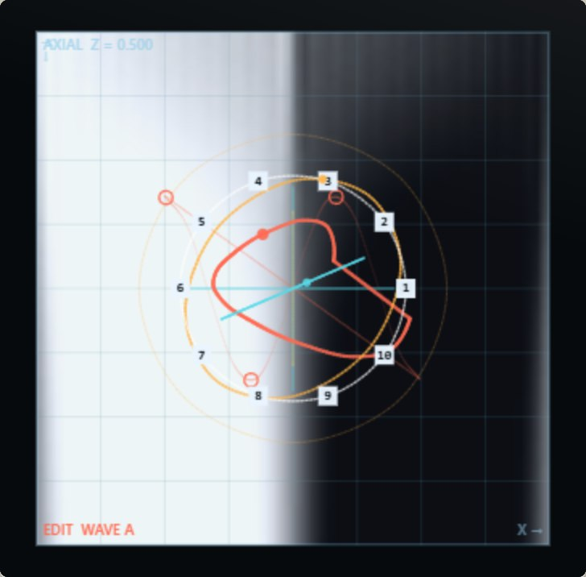
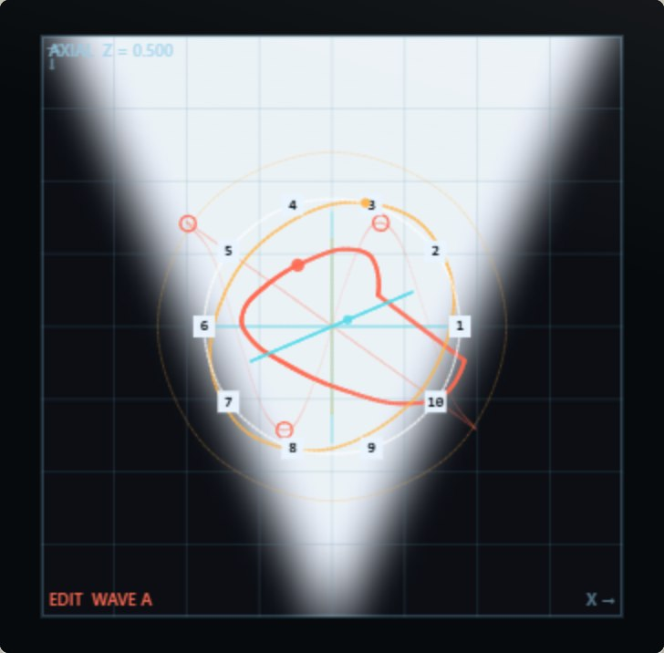
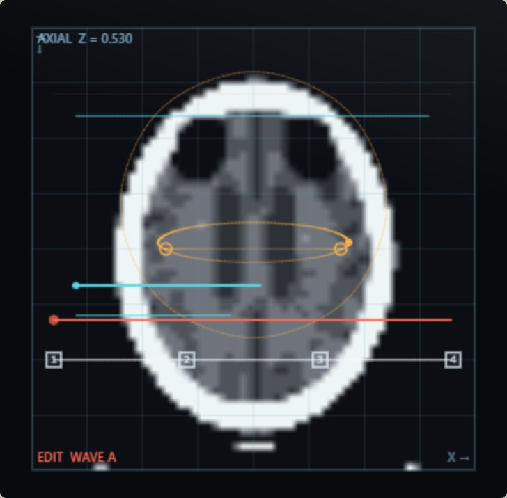

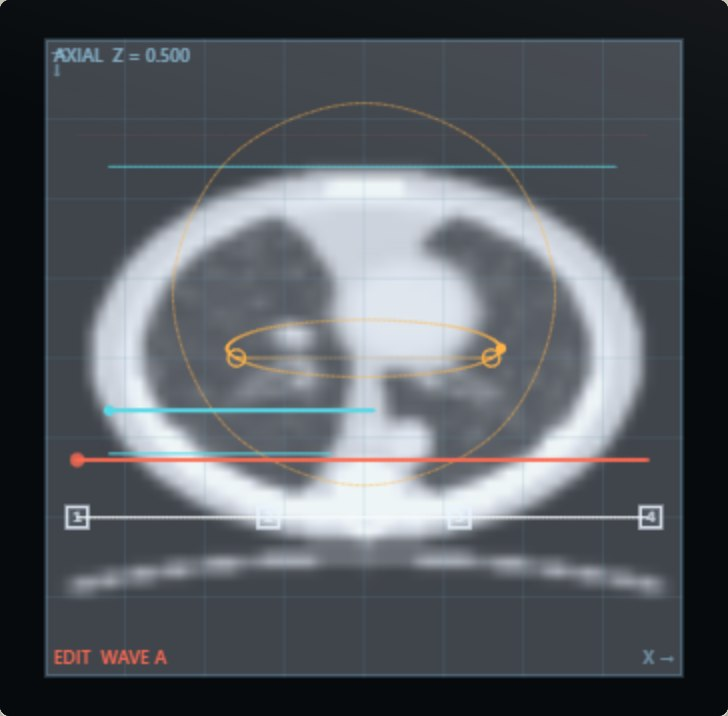
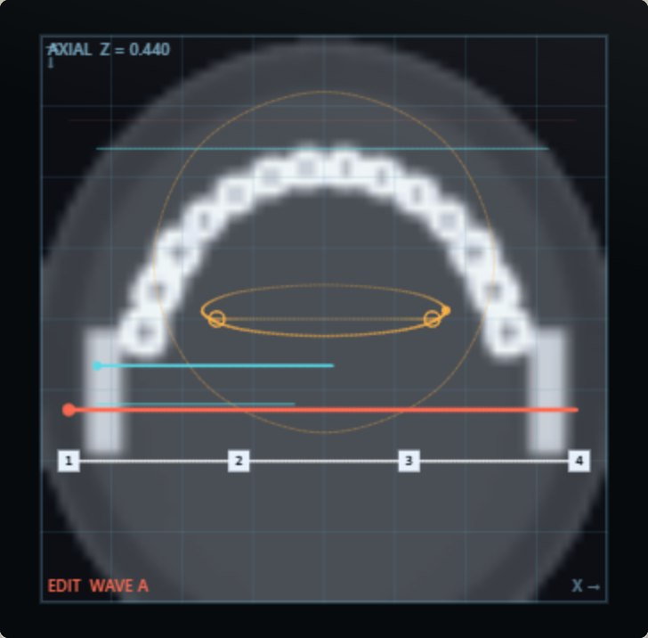
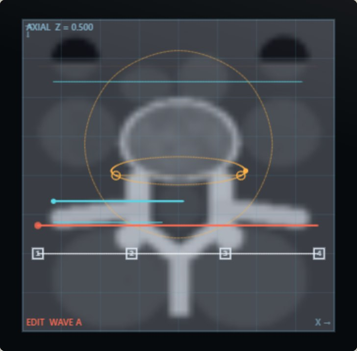
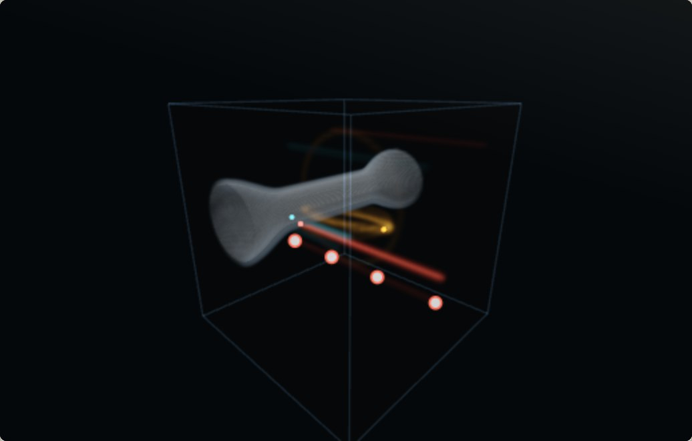
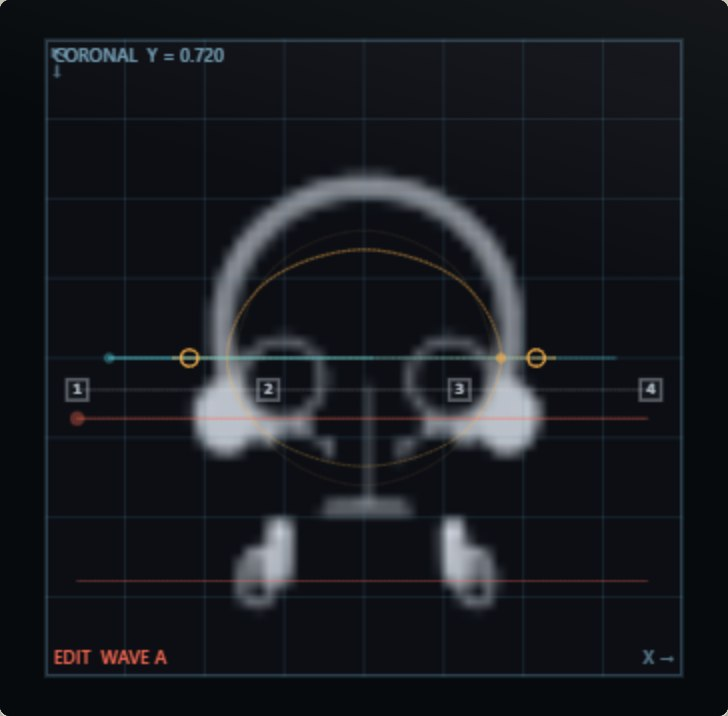
How the tissue is read
The field is stored as texels and a read lands between them, so a kernel decides what a point between texels is worth. GRAIN is that kernel. At 0 it is a smoothing B-spline, which rounds every corner and takes the top of the texel band down by up to 16 dB — the soft read the first build shipped with. At 1 it is an interpolating Catmull-Rom, which passes every texel as it is, kinks included. It is not a tone control: on a bright SPINE, harmonic 20 moves by a decibel between the two and harmonic 40 by five.
CONTRAST is a CT window applied to the sound. Narrowing it scales the read up — to sixteen times — and saturates it against the window's edges: a sine leans toward a square, and there is more for the filter to bite on. FOLD is what the window does past its edges: at 0 it clips, at 1 it folds the wave back in, which adds harmonics the tissue never had. Both are anti-derivative anti-aliased; the hardest window at C5 on the brightest field aliases at −51 dB and a full fold at −65. At CONTRAST 0 and FOLD 0 the window is not there at all, and the plain read stays the plain read.
And the volume itself doubled: 128 texels across where the first build had 64. A straight
line across the cube carried at most 32 harmonics; now 64. Every specimen was rebuilt for the
resolution — PULSE's edge is half a texel wide at the bottom of z, SPINE reaches
48 harmonics and a brightness past a saw. The panel still renders 643, the same bytes
averaged; the engine reads all 1283.
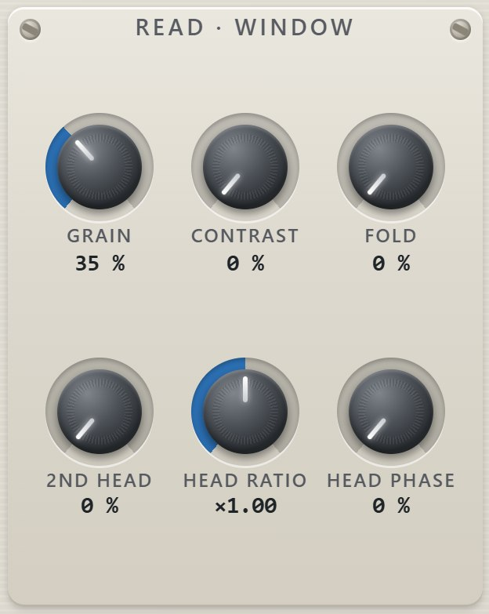
A volume of your own
IMPORT, under the specimen window, reads a real volume off disk and uses it instead
of the fifteen. It takes a NIfTI file (.nii or .nii.gz), a folder
of DICOM slices, or a folder of images. Any volumetric data will do — a CT or MR of a
head, a micro-CT of a fossil, a confocal stack, an industrial scan of a casting.
It does not join the fifteen: it overrides them. The window says IMPORTED while it is in use; CLEAR gives the dial back, and so does simply turning the dial — a dial that moved without changing anything read as broken, so now it wins. Adding an entry to the dial re-points every patch anyone has already saved, which is why the specimens that arrived in 260904.3 and 260905.1 came with a one-time remap of older patches and projects, and why an import still does not join the dial. An import has Hounsfield units of its own (its cube spans the window it was read with), so the presets light on it too.
What it does to the data, and why
It resamples in millimetres, not in voxels. A clinical CT is typically 0.5 mm across a slice and 1–5 mm between them. Resampling by index would squash the body along the slice axis by exactly that ratio. The spacing is read from the file, the physical extents are fitted into the cube, and a sphere stays a sphere.
It averages when it shrinks. 512 × 512 × 300 into 64³ is about 8 × 8 × 5 source voxels for every destination voxel. Point-sampling that is aliasing, and aliasing introduced here is in the specimen for good — no later filtering can reach it. Each axis is resampled with a filter as wide as that axis's own ratio.
It picks the window from the data. A single surgical clip at 3000 HU would otherwise push every brain voxel into the bottom two per cent of the range. The window is a percentile of the data rather than its extremes, and the values it chose are printed under the strip in the file's own units — Hounsfield units, for a CT.
The two controls
PHASE AXIS chooses which axis of the body is read as one cycle. A head read left-to-right, front-to-back and foot-to-head are three quite different instruments. SHAPE chooses FIT, which keeps the body's real proportions and pads the rest of the cube with air — silence at those phases — or FILL, which stretches it to the cube. Both re-read the file, because they change how it is read rather than how it is shown.
An imported volume is saved with the patch and with the project, compressed, so a patch is still the whole machine when the folder it came from has been tidied away.
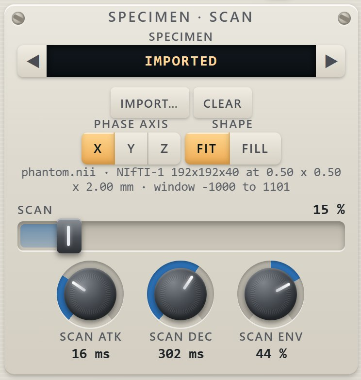


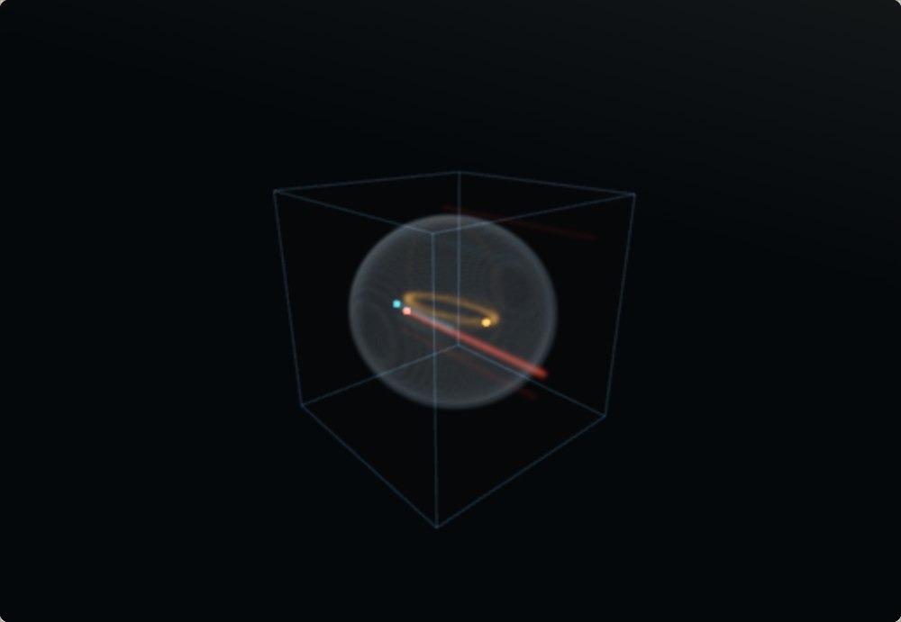